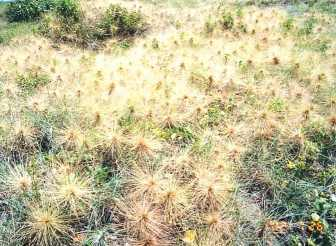

|
.７討論海濱植物的分佈情況 (1). 將海濱植物分為沙地分佈和濕地分佈兩種，由海濱的最前端的沙地延伸到內地為止，植物的分布
區域、範圍。 ( 2).由植物的分佈區，可以明白在沙地上的先驅植物，有濱刺麥、海米、蔓荊、 馬鞍藤
、單花蟛蜞菊、白毛等。在濕地上的先驅是紅樹林(水筆子)。
(3).可以將海濱植物分為海濱等有種和非特有種(一般陸地上也可發現) (i
)海濱特有：蔓荊、水丁香(海濱種)、濱刺麥、馬鞍藤、林投樹、白毛、單花
蟛蜞菊、海米、番杏、苦藍盤、矮芒草、鹽定、變葉藜、紅樹林、鹽地鼠尾粟。 (ii)非海濱特有種：黃槿、蘆葦、雙花蟛蜞菊、海韭菜(土香)、菌陳蒿、木麻黃、巴 拉草、咸
豐草、海桐、澤蘭、垂桉草、菟絲草、山萵苣、紅珠子等。
|
|
|
. |
 |
 回上頁
回上頁